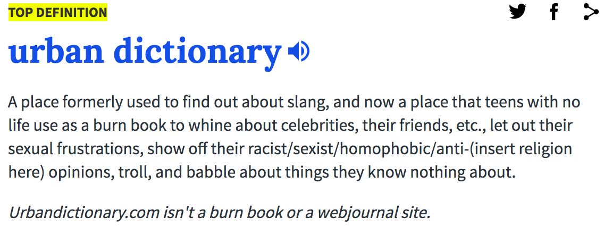

Urban Dictionary API
Urban Dictionary is a place that is used to find out the defination of slang words. It was founded in 1999 by Aaron Peckham as a parody of Dictionary.com. By 2014 the site featured over 7 million definitions.

Parent Company: None
Data/Content: Definitions of slang words, names, cultural referances, memes.
Possible Uses: Make a Urban Dictionary for just New York slang because there are so many different local sayings depending on what region of the state you live in.
Documentation: Urban Dictionary
URL to access API: Link to API
Getting access key: No key